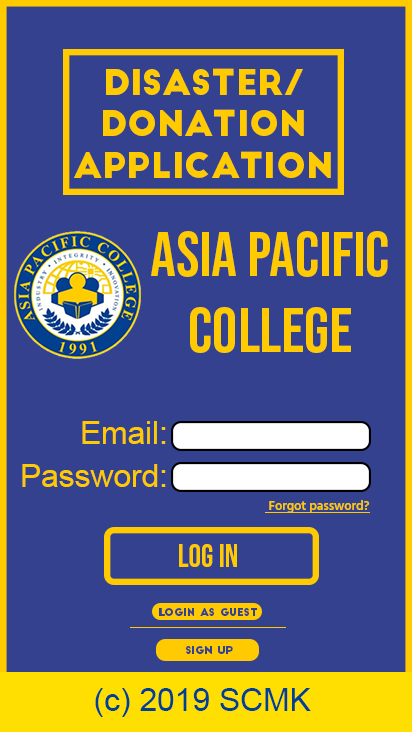

MY FAVORITE APPLICATIONS
There are a lot of applications used nowadays. My favorite apps are Twitter,
Facebook messenger and Spotify. I started using twitter since 2014. I use it to
express how I feel through tweeting. Twitter used to become my friend back in the
days since I let it consume most of my time. I read about other people’s thoughts
and opinions about random stuff. What I also like about twitter is the community
beacuse you can tweet whatever you want whether it be a rant, or basically about
anything and people woudn’t mind at all. One feature of this app is the night
mode, which is used if the user prefers it dark.
Next, Facebook messenger, I also use this a lot since this is often the tool
that is used to communicate with our families, friends and loved ones. I like
this app because you are able to communicate in various ways: chat, voice call
and/or video call. There are also games you can play if you are too bored or
waiting for a reply. Also, Facebook messenger has also a night mode like twitter
which people can use if the interface is too bright or if the user does not want
the white design.
Lastly, Spotify. It is a music application that enables people to listen to songs
of various artists, online or offline. This is also my favorite since I love
listening to music. It is convenient because I am able to download songs I love
and play it even if it is offline, anytime, anywhere. It really helped boost
my energy when I listen to music.
DESIGN AN INTERFACE FOR A 1000 FLOOR ELEVATOR
How would you design an interface for a 1000 floor elevator?
Elevators are designed to make a person’s travel time short from the first floor going up to their
destination and vice versa. A building that has 1000 floors will surely need an elevator to go up to the
desired floor easily and without hassle. Using the stairs will never be an option if a person wants to go to
about 600 th floor starting from the first floor since first, it will take that person a lot of time to go up to
his or her desired floor and second, the energy consumed by the person will surely fall down fast. With
that, elevator will surely be the solution to go up to the building hassle-free.
If a building has 1000 floor on it, I would design the interface of an elevator by first, the buttons
wherein a person can put his or her desired floor should be a touch screen display. Meaning, there will
be a touch screen numpad where that person can type his or her desired floor. Using the regular
elevator buttons is not really a great move since it is a 1000 floor, people may tend to be confused on
finding where their floor is located. Imagine, 1000 buttons are shown all around the corners of the
elevator, it will also take time to find the button for that specific floor. So, touch screen numpad will
surely be a great help to make it easier to access a floor. There will also be a voice recognition feature, in
case if a person that will use the elevator is blind and a voice notification that will tell the current floor
number of the elevator. The floor numbers that will be displayed in the LCD will be in ascending order
and descending order when going down. The screen will only display 6 floor numbers at a time, and a
time interval of 4 seconds to display other floors that are not previously seen in the LCD and the cycle
will repeat. Also, since people nowadays are not trustworthy, they may tend to make fun using the
elevator buttons. They might end up entering random numbers that can give hassle to the passengers of
the elevator. In order to fix that, I would recommend adding a membership card wherein the person
who has it can scan the card and will have access to input only one floor. If they wish to change the
floor, they have 3 chances per day in changing their floor number. If in case a guest will visit the building,
he/she needs to go first to the receptionist and the receptionist will ask for the floor number of the
guest, then the receptionist will then set the card to the guest’s desired floor and the guest will tap the
visitor card and will automatically queue the floor number in the elevator.
Since, an elevator can accommodate up to 907 to 1,134kg or approximately 14 people, there
will be a problem on fitting all the people that will use the elevator. There will be a buzzer that will
sound if in case the elevator is overload. The solution for this, is the elevators will be divided into 4
halves, first is 1-250, second is 250-500, third is 500 too 750, and 750 to 1000. There will be 3 elevators
for each section, so that people will not be crowded in one elevator.
This solution can really help a lot to prevent people from trolling and help to lessen the
confusion on where to find the desired floor button. In conclusion, it can really lessen time consumed
since the elevator won’t need to stop at every floor because it will only stop when the person inputs his
or her desired floor number.
NEED FINDING
GROUP 1 – S.C.M.K
PLAN = “Disaster/Donation Application”
Problem:
As you all know, the Philippines is located in the ring of fire which makes it
prone to many natural disasters. Such as typhoons, earthquakes, landslides, floods,
volcanic eruptions, and many more. Due to the many disasters found around the
Philippines, donations are constantly requested. However, with the increase of
donations comes with an increase of fraud. One of the which is the Mar Roxas
“misused” fund scandal during the Yolanda disaster. Another personal experience
from one of the members is that whenever he/she is required to donate for the poor
the management staff just kept the goods in a storeroom instead of giving it to the
needy.
- Lack of organization (very messy whenever a disaster hits)
- Lack of coordination (things go south when things don’t go well)
- Lack of information (where to donate, different disasters around the
country)
- Confusion (everyone gets distracted which makes it hard to work
towards the common goal)
- Lack of security when donating (no certification, creditable locations)
- A lot of possible scams whenever a disaster hits (donations received
but never delivered)
Solution:
The possible solution that the group discussed is that we would create a
platform that could be more trustworthy and more friendly. Our group decided to
make an application that could possibly help prevent and make it easier for the
donators.
- An application that tells you the nearest location when donating
- News on the different disasters that are happening around us.
- Coordination
- More trustworthy platform for donation
- Certified donation locations
- Can alert the users whenever a donation is needed
REGISTRATION AND LOGIN FORMS
Login Page
Signup Page
Signup Page with error

Successful Signup
Main Page
PERSONA
Scenario #1
Here we have Annie, a very rich CEO that owns a lot of companies in
the real estate industry. She is quite famous around the globe since
she owns a lot of companies. Now Annie wanted to donate to a charity.
She doesn't know what kind of charity she can donate to and also wanted
to donate anonymously.
Scenario #2
In here we have Cardo, a construction worker that helps in building
structures. He is one of the persons in the society who receives a low
amount of payment. Despite that, he still wants to donate to those in
need. Even though he himself has needs. Cardo has no idea where to donate.
Scenario #3
Here we have James, a family guy who earns an above average income and
is able to support his family. James here wanted to donate to those
people who got stricken by a natural disaster. But, he doesn't have any
idea where to donate to. James is also quite busy with work and has no time
to search for a charity organization to donate to.
INFORMATION DESIGN

I think the directions should already be posted within the invitation so that the guests will
not ask for the directions. Also, it will be time consuming for the inviter since he/she will
need to answer the same questions if all of the guests are asking for the directions. Also,
words after a period should be capitalized. There should be spacing between each part of
the invitation and the differences between font sizes of each should be used so that it will
give emphasis on what the invitation is all about.
The objective function of the invitation is to invite the guests to the delectable after-dinner
party of Robert and Alexandra at a specific time and place.
Own design of the passage